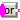
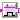
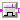
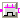
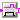
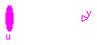

This package contains basic mathematical operations on Boolean signals.
Package MathBoolean is a new design that shall replace in the future the Logical package. The new features are:
Extends from Modelica.Icons.Package (Icon for standard packages).
| Name | Description |
|---|---|
| MultiSwitch | Set Boolean expression that is associated with the first active input signal |
| And | Logical 'and': y = u[1] and u[2] and ... and u[nu] |
|  Or | Logical 'or': y = u[1] or u[2] or ... or u[nu] |
| Logical 'xor': y = oneTrue(u) (y is true, if exactly one element of u is true, otherwise it is false) | |
| Logical 'nand': y = not ( u[1] and u[2] and ... and u[nu] ) | |
| Logical 'nor': y = not ( u[1] or u[2] or ... or u[nu] ) | |
| Logical 'not': y = not u | |
|  RisingEdge | Output y is true, if the input u has a rising edge, otherwise it is false (y = edge(u)) |
|  FallingEdge | Output y is true, if the input u has a falling edge, otherwise it is false (y = edge(not u)) |
|  ChangingEdge | Output y is true, if the input u has either a rising or a falling edge and otherwise it is false (y=change(u)) |
|  OnDelay | Delay a rising edge of the input, but do not delay a falling edge. |
The block has a vector of Boolean input signals u[nu] and a vector of (time varying) Boolean expressions expr[:]. The output signal y is set to expr[i], if i is the first element in the input vector u that is true. If all input signals are false, y is set to parameter "y_default" or the previous value of y is kept if parameter use_pre_as_default = true:
// Conceptual equation (not valid Modelica)
i = 'first element of u[:] that is true';
y = if i==0 then (if use_pre_as_default then pre(y)
else y_default)
else expr[i];
The usage is demonstrated, e.g., in example Modelica.Blocks.Examples.BooleanNetwork1.
| Type | Name | Default | Description |
|---|---|---|---|
| Boolean | expr[nu] | fill(false, nu) | y = if u[i] then expr[i] else y_default (time varying) |
| Boolean | use_pre_as_default | true | set true to hold last value as default (y_default = pre(y)) |
| Boolean | y_default | false | Default value of output y if all u[i] = false |
| Type | Name | Description |
|---|---|---|
| input BooleanVectorInput | u[nu] | Set y = expr[i], if u[i] = true |
| output BooleanOutput | y | Output depending on expression |
block MultiSwitch
"Set Boolean expression that is associated with the first active input signal"
input Boolean expr[nu]=fill(false, nu)
"y = if u[i] then expr[i] else y_default (time varying)";
parameter Boolean use_pre_as_default=true
"set true to hold last value as default (y_default = pre(y))";
parameter Boolean y_default=false
"Default value of output y if all u[i] = false";
parameter Integer nu(min=0) = 0 "Number of input connections";
Modelica.Blocks.Interfaces.BooleanVectorInput u[nu]
"Set y = expr[i], if u[i] = true";
Modelica.Blocks.Interfaces.BooleanOutput y(start=y_default,fixed=true)
"Output depending on expression";
protected
Integer firstActiveIndex;
equation
firstActiveIndex =
Modelica.Math.BooleanVectors.firstTrueIndex(
u);
y = if firstActiveIndex == 0 then (if use_pre_as_default then pre(y) else y_default) else
expr[firstActiveIndex];
end MultiSwitch;

The output is true if all inputs are true, otherwise the output is false.
The input connector is a vector of Boolean input signals. When a connection line is drawn, the dimension of the input vector is enlarged by one and the connection is automatically connected to this new free index (thanks to the connectorSizing annotation).
The usage is demonstrated, e.g., in example Modelica.Blocks.Examples.BooleanNetwork1.
If no connection to the input connector "u" is present, the output is set to false: y=false.
Extends from Modelica.Blocks.Interfaces.PartialBooleanMISO (Partial block with a BooleanVectorInput and a BooleanOutput signal).
| Type | Name | Description |
|---|---|---|
| input BooleanVectorInput | u[nu] | Vector of Boolean input signals |
| output BooleanOutput | y | Boolean output signal |
block And
"Logical 'and': y = u[1] and u[2] and ... and u[nu]"
extends Modelica.Blocks.Interfaces.PartialBooleanMISO;
equation
y = Modelica.Math.BooleanVectors.allTrue(
u);
end And;
The output is true if at least one input is true, otherwise the output is false.
The input connector is a vector of Boolean input signals. When a connection line is drawn, the dimension of the input vector is enlarged by one and the connection is automatically connected to this new free index (thanks to the connectorSizing annotation).
The usage is demonstrated, e.g., in example Modelica.Blocks.Examples.BooleanNetwork1.
If no connection to the input connector "u" is present, the output is set to false: y=false.
Extends from Modelica.Blocks.Interfaces.PartialBooleanMISO (Partial block with a BooleanVectorInput and a BooleanOutput signal).
| Type | Name | Description |
|---|---|---|
| input BooleanVectorInput | u[nu] | Vector of Boolean input signals |
| output BooleanOutput | y | Boolean output signal |
block Or "Logical 'or': y = u[1] or u[2] or ... or u[nu]"
extends Modelica.Blocks.Interfaces.PartialBooleanMISO;
equation
y = Modelica.Math.BooleanVectors.anyTrue(
u);
end Or;
The output is true if exactly one input is true, otherwise the output is false.
The input connector is a vector of Boolean input signals. When a connection line is drawn, the dimension of the input vector is enlarged by one and the connection is automatically connected to this new free index (thanks to the connectorSizing annotation).
The usage is demonstrated, e.g., in example Modelica.Blocks.Examples.BooleanNetwork1.
If no connection to the input connector "u" is present, the output is set to false: y=false.
Extends from Modelica.Blocks.Interfaces.PartialBooleanMISO (Partial block with a BooleanVectorInput and a BooleanOutput signal).
| Type | Name | Description |
|---|---|---|
| input BooleanVectorInput | u[nu] | Vector of Boolean input signals |
| output BooleanOutput | y | Boolean output signal |
block Xor
"Logical 'xor': y = oneTrue(u) (y is true, if exactly one element of u is true, otherwise it is false)"
extends Modelica.Blocks.Interfaces.PartialBooleanMISO;
equation
y = Modelica.Math.BooleanVectors.oneTrue(
u);
end Xor;
The output is true if at least one input is false, otherwise the output is false.
The input connector is a vector of Boolean input signals. When a connection line is drawn, the dimension of the input vector is enlarged by one and the connection is automatically connected to this new free index (thanks to the connectorSizing annotation).
The usage is demonstrated, e.g., in example Modelica.Blocks.Examples.BooleanNetwork1.
If no connection to the input connector "u" is present, the output is set to false: y=false.
Extends from Modelica.Blocks.Interfaces.PartialBooleanMISO (Partial block with a BooleanVectorInput and a BooleanOutput signal).
| Type | Name | Description |
|---|---|---|
| input BooleanVectorInput | u[nu] | Vector of Boolean input signals |
| output BooleanOutput | y | Boolean output signal |
block Nand
"Logical 'nand': y = not ( u[1] and u[2] and ... and u[nu] )"
extends Modelica.Blocks.Interfaces.PartialBooleanMISO;
equation
y = not Modelica.Math.BooleanVectors.allTrue(
u);
end Nand;
The output is false if at least one input is true, otherwise the output is true.
The input connector is a vector of Boolean input signals. When a connection line is drawn, the dimension of the input vector is enlarged by one and the connection is automatically connected to this new free index (thanks to the connectorSizing annotation).
The usage is demonstrated, e.g., in example Modelica.Blocks.Examples.BooleanNetwork1.
If no connection to the input connector "u" is present, the output is set to false: y=false.
Extends from Modelica.Blocks.Interfaces.PartialBooleanMISO (Partial block with a BooleanVectorInput and a BooleanOutput signal).
| Type | Name | Description |
|---|---|---|
| input BooleanVectorInput | u[nu] | Vector of Boolean input signals |
| output BooleanOutput | y | Boolean output signal |
block Nor
"Logical 'nor': y = not ( u[1] or u[2] or ... or u[nu] )"
extends Modelica.Blocks.Interfaces.PartialBooleanMISO;
equation
y = not Modelica.Math.BooleanVectors.anyTrue(
u);
end Nor;

The output is false if at least one input is true, otherwise the output is true.
The input connector is a vector of Boolean input signals. When a connection line is drawn, the dimension of the input vector is enlarged by one and the connection is automatically connected to this new free index (thanks to the connectorSizing annotation).
The usage is demonstrated, e.g., in example Modelica.Blocks.Examples.BooleanNetwork1.
Extends from Modelica.Blocks.Interfaces.PartialBooleanSISO_small (Partial block with a BooleanInput and a BooleanOutput signal and a small block icon).
| Type | Name | Description |
|---|---|---|
| input BooleanInput | u | Boolean input signal |
| output BooleanOutput | y | Boolean output signal |
block Not "Logical 'not': y = not u" extends Modelica.Blocks.Interfaces.PartialBooleanSISO_small; equation y = not u;end Not;
A rising edge of the Boolean input u results in y = true at this time instant. At all other time instants, y = false.
The usage is demonstrated, e.g., in example Modelica.Blocks.Examples.BooleanNetwork1.
Extends from Modelica.Blocks.Interfaces.PartialBooleanSISO_small (Partial block with a BooleanInput and a BooleanOutput signal and a small block icon).
| Type | Name | Default | Description |
|---|---|---|---|
| Boolean | pre_u_start | false | Value of pre(u) at initial time |
| Type | Name | Description |
|---|---|---|
| input BooleanInput | u | Boolean input signal |
| output BooleanOutput | y | Boolean output signal |
block RisingEdge "Output y is true, if the input u has a rising edge, otherwise it is false (y = edge(u))" parameter Boolean pre_u_start = false "Value of pre(u) at initial time"; extends Modelica.Blocks.Interfaces.PartialBooleanSISO_small; initial equation pre(u) = pre_u_start; equation y = edge(u);end RisingEdge;
A falling edge of the Boolean input u results in y = true at this time instant. At all other time instants, y = false.
The usage is demonstrated, e.g., in example Modelica.Blocks.Examples.BooleanNetwork1.
Extends from Modelica.Blocks.Interfaces.PartialBooleanSISO_small (Partial block with a BooleanInput and a BooleanOutput signal and a small block icon).
| Type | Name | Default | Description |
|---|---|---|---|
| Boolean | pre_u_start | false | Value of pre(u) at initial time |
| Type | Name | Description |
|---|---|---|
| input BooleanInput | u | Boolean input signal |
| output BooleanOutput | y | Boolean output signal |
block FallingEdge "Output y is true, if the input u has a falling edge, otherwise it is false (y = edge(not u))" parameter Boolean pre_u_start = false "Value of pre(u) at initial time"; extends Modelica.Blocks.Interfaces.PartialBooleanSISO_small; protected Boolean not_u = not u; initial equation pre(not_u) = not pre_u_start; equation y = edge(not_u);end FallingEdge;
A changing edge, i.e., either rising or falling, of the Boolean input u results in y = true at this time instant. At all other time instants, y = false.
The usage is demonstrated, e.g., in example Modelica.Blocks.Examples.BooleanNetwork1.
Extends from Modelica.Blocks.Interfaces.PartialBooleanSISO_small (Partial block with a BooleanInput and a BooleanOutput signal and a small block icon).
| Type | Name | Default | Description |
|---|---|---|---|
| Boolean | pre_u_start | false | Value of pre(u) at initial time |
| Type | Name | Description |
|---|---|---|
| input BooleanInput | u | Boolean input signal |
| output BooleanOutput | y | Boolean output signal |
block ChangingEdge "Output y is true, if the input u has either a rising or a falling edge and otherwise it is false (y=change(u))" parameter Boolean pre_u_start = false "Value of pre(u) at initial time"; extends Modelica.Blocks.Interfaces.PartialBooleanSISO_small; initial equation pre(u) = pre_u_start; equation y = change(u);end ChangingEdge;
 Modelica.Blocks.MathBoolean.OnDelay
Modelica.Blocks.MathBoolean.OnDelay
A rising edge of the Boolean input u gives a delayed output. A falling edge of the input is immediately given to the output.
Simulation results of a typical example with a delay time of 0.1 s is shown in the next figure.


The usage is demonstrated, e.g., in example Modelica.Blocks.Examples.BooleanNetwork1.
Extends from Modelica.Blocks.Interfaces.PartialBooleanSISO_small (Partial block with a BooleanInput and a BooleanOutput signal and a small block icon).
| Type | Name | Default | Description |
|---|---|---|---|
| Time | delayTime | Delay time [s] |
| Type | Name | Description |
|---|---|---|
| input BooleanInput | u | Boolean input signal |
| output BooleanOutput | y | Boolean output signal |
block OnDelay
"Delay a rising edge of the input, but do not delay a falling edge."
extends Modelica.Blocks.Interfaces.PartialBooleanSISO_small;
parameter Modelica.SIunits.Time delayTime "Delay time";
protected
Boolean delaySignal(start=false,fixed=true);
discrete Modelica.SIunits.Time t_next;
initial equation
pre(u) = false;
pre(t_next) = time - 1;
algorithm
when u then
delaySignal := true;
t_next := time + delayTime;
elsewhen not u then
delaySignal := false;
t_next := time - 1;
end when;
equation
if delaySignal then
y = time >= t_next;
else
y = false;
end if;
end OnDelay;